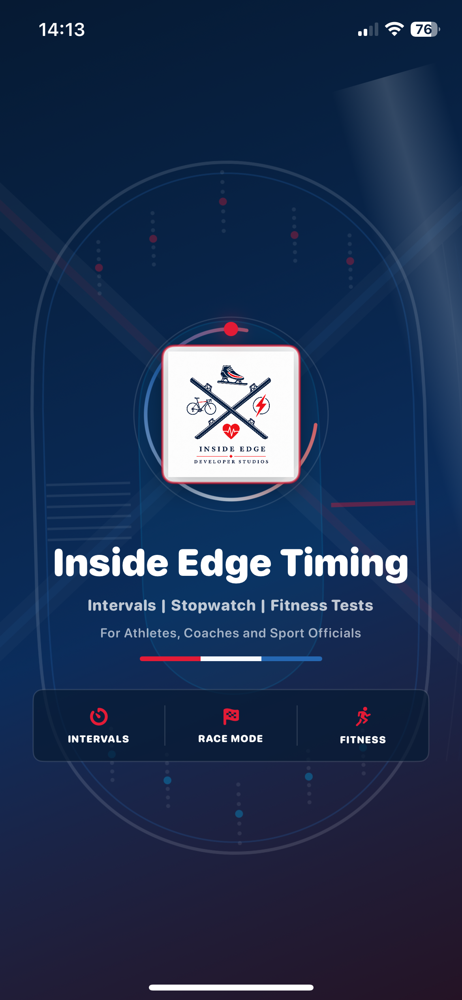

Heart rate
Live Bluetooth HRM support
Connect a compatible Bluetooth heart-rate monitor and view live BPM during training. Enter your lactate-threshold heart rate so the app can show personalised LTHR zones.
Inside Edge Timing · Version 1.0 (4)
Built from the knowledge of world-class athletes and coaches from Short Track Speed Skating, Inside Edge Timing gives athletes, coaches and sport officials a practical toolkit for structured training, live splits, finish-order capture and the Léger 20m multistage fitness test.

Four focused modes
Go directly to the timing or testing workflow that matters.
Intervals Timer
Create named sets with individual work, recovery, rest and audible beat patterns.
Explore Intervals →Splits Timer
Keep split and cumulative times together, add notes, then save or share.
Explore Splits →Race Timer
Build a start list, record finishers and preserve total times and gaps.
Explore Race mode →Fitness Tests
Guide up to four athletes with built-in timings, cues, scoring and reports.
Explore Fitness Tests →App screenshots
Select a screen to explore that focused timing or testing mode.


Short track at its core
Short track training asks for repeat efforts, precise timing, changing intensity, loud environments and fast decisions. A useful timing app has to be readable at a glance, quick under pressure and forgiving when a session changes in the moment.
Inside Edge Timing starts there: big countdowns, clear phases, audible cues, live progress, quick stopwatch controls and a race workflow that respects the pace of a competition day.
The same tools work naturally for strength circuits, HIIT, cycling, running, rehabilitation, mobility, team-sport conditioning and custom training sessions.
Training intelligence
Heart rate
Connect a compatible Bluetooth heart-rate monitor and view live BPM during training. Enter your lactate-threshold heart rate so the app can show personalised LTHR zones.
Zones
See Active Recovery, Endurance, Tempo, Sweet Spot, Lactate Threshold, VO2 Max and Anaerobic Capacity ranges calculated from your own threshold value.
History
Save interval completion reports, independent split sessions and race results with distance locally. Add effort scores and notes, then share reports through the standard iOS share sheet.
Current release
The current Inside Edge Timing build brings structured interval sessions, training split capture, race finish-order recording and the Léger 20m multistage fitness test together with Bluetooth heart-rate context, local history and practical PDF, CSV and text sharing.
Read the complete support guide →Ready for sport
Visit support for setup guidance, test protocol notes and troubleshooting.
The app is currently being prepared for release on iPhone and iPad. Download details and the official App Store link will appear here as soon as it is available.
Important timing note: Inside Edge Timing is a coaching, training and event-organisation aid. It is not a certified replacement for approved electronic timing, officiating or official results systems.